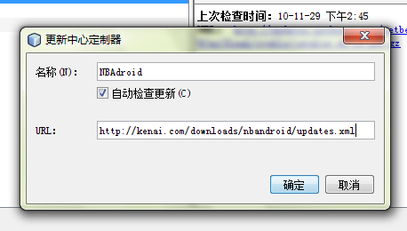
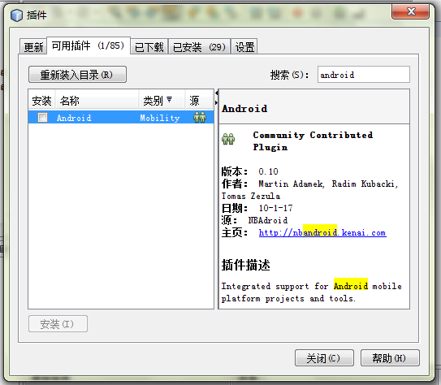
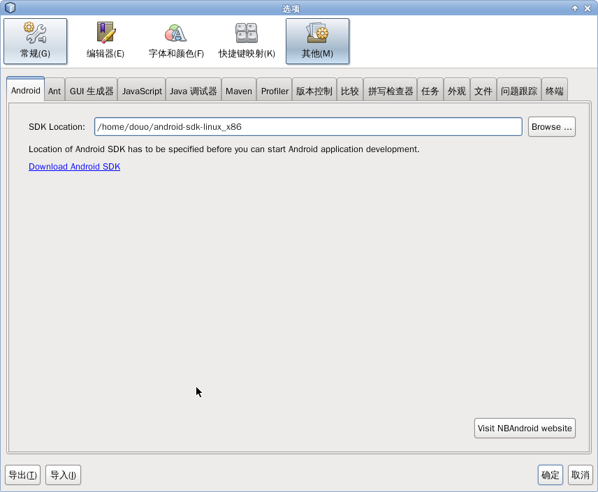
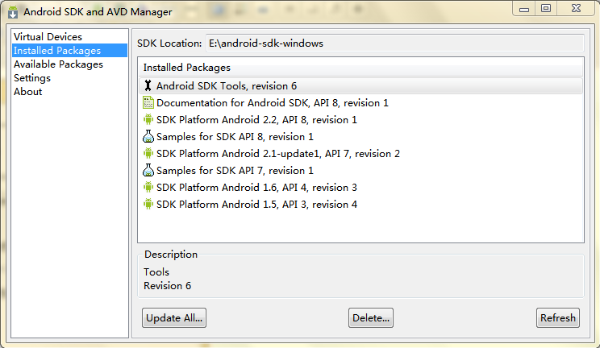
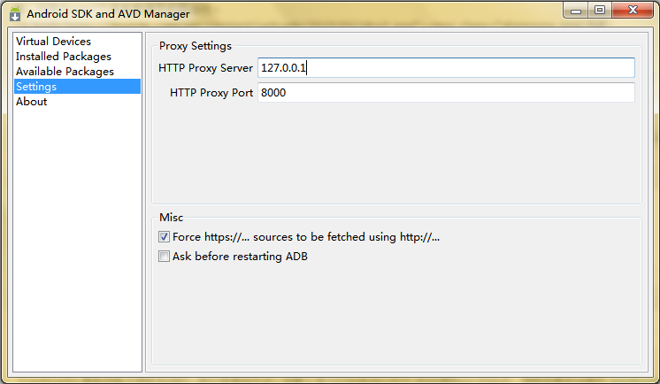
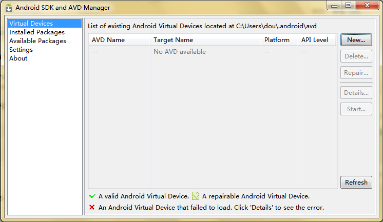
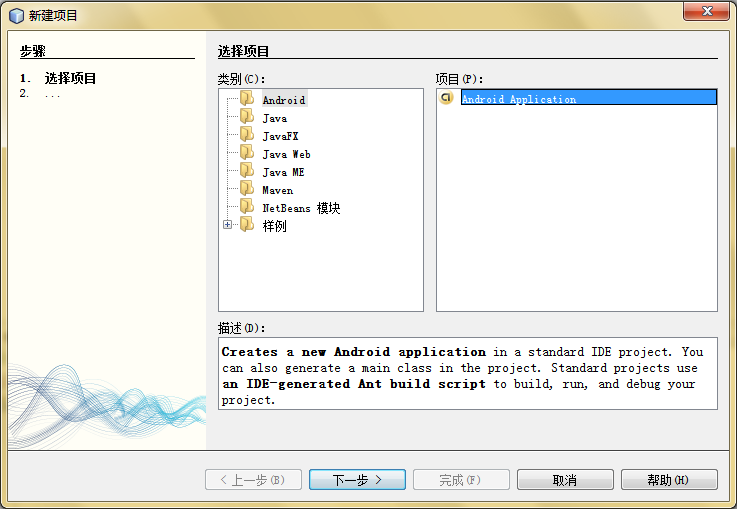
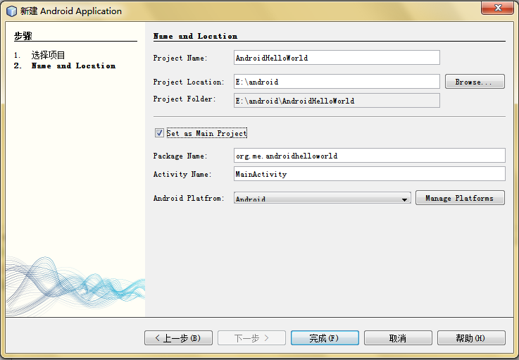
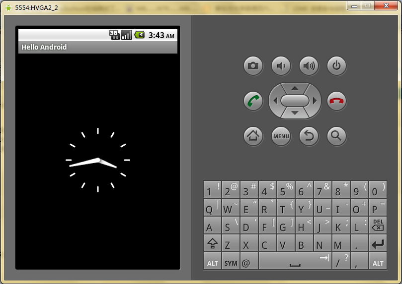
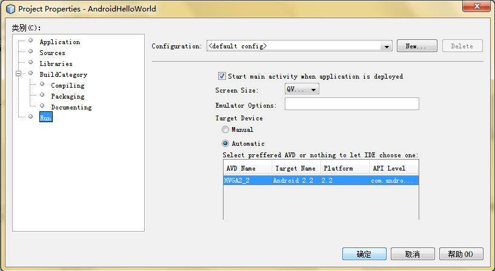

NBAndroid
突发奇想要看看Android应用程序的开发，在网上找了些文章，发现android的开发环境大多是Eclipse+ADT，其实在netbeans上也是可以的。有个netbeabs插件叫NBAndroid，如果想在Netbeans上开发Android应用第一步就是要安装它，下面是NBAndroid的项目主页 http://kenai.com/projects/nbandroid。
安装与设置
要安装NBAdroid，推荐的方法是在NetBeans中注册NBAdroid的更新中心（Update Center），具体的步骤是：
- 打开工具(Tools )-> 插件(Plugins) -> 设置选项卡(Setting)
- 点”添加”按钮将这个链接http://kenai.com/downloads/nbandroid/updatecenter/updates.xml加进去，改个名字，确定。
- 转到可用插件选项卡（Available Plugins），找到Android插件，安装。出现验证警告点继续就可以了。
 添加NBAndroid更新中心
{kind=link}
 安装NBAndroid
{kind=link}
安装的步骤很简单，下载后将压缩包解压，然后把所有*.nbm的文件导入到netbeans便可。在netbeans中添加插件的方法也说一下，在”菜单栏”
-> 工具 -> 插件
在插件页面的”已下载”选项卡中可找到按钮”添加插件”，这个按钮便是可以用来添加nbm文件，如图1所示
接下来，指定Android SDK的位置，方法:”菜单栏” -> 工具 -> 选项，点击”Android”标签页。就可以看到类似下面的界面：  选择SDK的目录便可。
{kind=link}
如果还没有Google Android SDK 的话要先下载Android SDK，下载页在这里。官方的安装说明在这里(英文)。（网站已被墙，推荐Google 搜索GappProxy）安装SDK的步骤要多一些，将下载后的压缩包解压到你要放的位置。运行SDK Setup.exe应该会看到下面的界面，记得在win7下得用管理员权限运行。  图3
{kind=link}
我这张图是更新后截的，没更新前只有Android SDK Tools,revision 6一个项。嗯，没错更新服务器也被墙了，可在setting了设置Http 代理服务器，因为GappProxy对Https的支持不好，下图那个选项也打上勾。
 图4
{kind=link}
更新好之后先别急着关掉，还要新建一个设备，选择Virtual Devices，单击”New”，建好之后就可以重新回到NetBeans了。  图5
{kind=link}
一个简单例子
现在就可以创建项目了，见图8，我创建了一个AndroidHelloWorld的程序。默认平台已经选好了Android。还有最好也更改下包名。
 图8
{kind=link}
 图9
{kind=link}
项目初始化后，在MainActivity写了些测试代码如下：
public void onCreate(Bundle icicle) {
setTitle("Hello Android");
super.onCreate(icicle);
setContentView(new AnalogClock(this));
}
现在就可以运行了，不过第一次运行要启动模拟器，相当的久，我差不多花了2分钟。而且，我第一次运行时程序没有载入，重新运行一次便可以了，因为不用启动模拟器第二次的运行快很多了，差不多10来秒。记得不要把模拟器关了，不然下次运行要重启模拟器，又要花很多时间。OK，我的第一个Android程序诞生鸟～
 图10
{kind=link}
还有一点就是NBAndroid的R.java不能实时自动生成，作者说过是在pre-build的时候生成，所以改动资源要习惯下按F11生成下项目才可以更新R.java。
哦，在项目属性还有一些可以设置的,比如选择模拟器。  图11
{kind=link}
NBAndroid还支持Logcat，在窗口 -> 输出 -> ADB Log 可以打开Logcat窗口，不过只能够通过PID来过滤消息。我第一次开的时候还遇到Bug，假死了，重启NetBeans才能恢复。
总的来说，NBAndroid相比Eclipse上的ADT不足的地方很多（Issue Tracking）。但相比Eclipse我又更喜欢Netbeans，所以到底用哪个IDE我也很纠结啊，不过最近一直是用Eclipse+ADT。NBAndroid的活跃度一直不高啊，很多Bug还没有修复，大家有心的话也去帮忙做点贡献吧。再发一下NBAndroid的项目地址http://kenai.com/projects/nbandroid
查看源码（Attach Sources）
Netbeans7.1终于有像Eclipse一样的Attach
Sources按钮，可以为android.jar附加源码了。虽然现在Netbeans 7.1
还处在测试阶段，但这个功能太重要了，迫不及待要去尝鲜，不过其实现在也足够稳定了。
 先下载Netbeans 7.1
beta，然后在这里：http://adt-addons.googlecode.com/svn/trunk/source/com.android.ide.eclipse.source.update/plugins/
可以下载到打包好android各版本的源码，这是个jar档案需要解压出来。
先下载Netbeans 7.1
beta，然后在这里：http://adt-addons.googlecode.com/svn/trunk/source/com.android.ide.eclipse.source.update/plugins/
可以下载到打包好android各版本的源码，这是个jar档案需要解压出来。
另外，如果已安装有旧版本的netbeans，如7.0；需要注意一个问题，如Bug
200698里
jn0101@netbeans.org
的描述。如果7.1和旧版的netbeans共用一个userdir可能会导致”Attach
Sources”按钮失效。我试过了确实会这样（linux下）。解决方法可以用–userdir给netbeans
7.1重新指定一个新userdir。不过，我是直接把.netbeans文件删掉，当然有先备份，然后，先配置好7.1的nbandroid和为项目的android.jar附加源码。再把备份的7.0拷回来。再把7.0的一些config拷给7.1，如：Editors和Keymaps等等。这样两个版本都可以正常工作了。

{kind=link}
NBANDROID-71基本可以算解决了。
一些可能有用的链接
- http://developer.android.com/index.html Android开发者主页，（墙）
- http://androidappdocs.appspot.com/index.html没有被墙的开发者主页镜像
- http://kenai.com/projects/nbandroid/pages/HomeNBAndroid Wiki